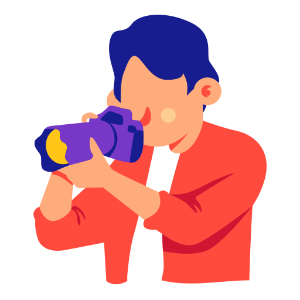
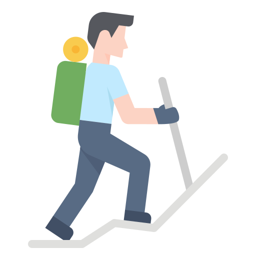

Cricket is a sport that has always fascinated me, and it has been a hobby of mine for many years. I love the strategy and teamwork involved in the game, as well as the thrill of watching a well-timed shot or a wicket falling. I also enjoy playing cricket with my friends and family, as it provides an opportunity to bond and work together towards a common goal. I have followed the sport closely over the years, keeping up with news, matches, and players from around the world. For me, cricket is more than just a sport, it's a passion and a way of life.

As a photography hobbyist, I love to capture the beauty of nature, people, and places through my camera lens. It allows me to express my creativity and capture moments that are meaningful to me.

Trekking is a great hobby that involves exploring nature, usually on foot. It is an activity that can be enjoyed alone or with a group of friends or family. Trekking allows one to disconnect from the hustle and bustle of daily life and immerse themselves in the peaceful surroundings of nature.

Playing games can be a fun and entertaining hobby. It can involve playing board games, video games, or even outdoor games. Games can provide a way to unwind and relieve stress, while also providing a social activity to enjoy with friends.
For play Game Click Here